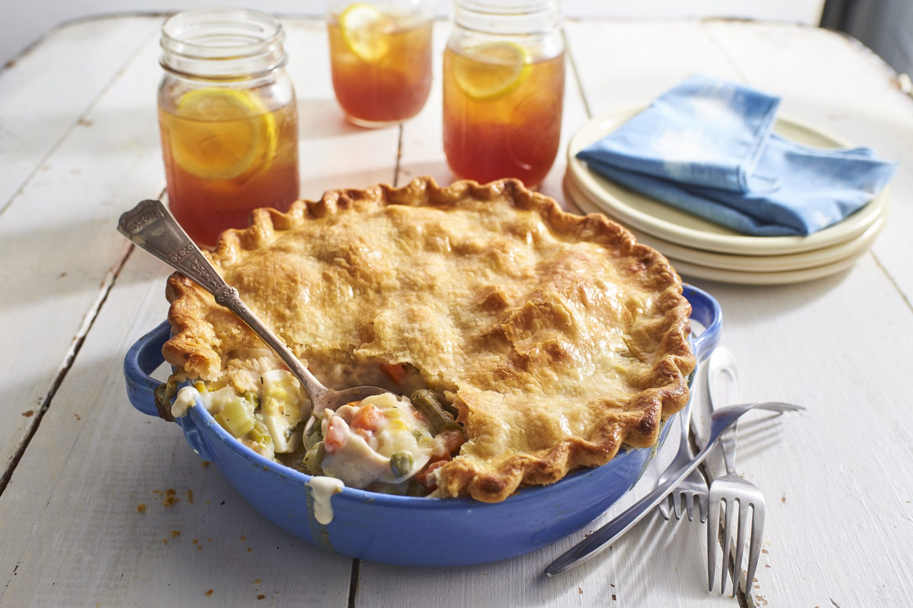

Chicken Pot Pie

Description
This is a recipe on how to make a delicious chicken pot pie.
Many of us love a hot meal come fall and winter time, why not
give this chicken pot pie a try. Many love this traditional
southern dish because not only is it tasty but it can feed
a family, savory and packed with protein!
Ingredients
- box (14.1 oz) refrigerated Pillsbury™ Pie Crusts (2 Count)
- 1/3 cup butter or margarine
- 1/3 cup chopped onion
- 1/3 cup all purpose flower
- 1/2 teaspoon salt
- 1/4 teaspoon pepper
- 1 3/4 cup progresso chicken broth
- 1/2 cup of milk
- 2 1/2 cups shredded cooked chicken
- 2 cups of thawed frozen mixed vegetables
Steps
- Heat oven to 425°F. Prepare pie crusts as directed on box
for Two-Crust Pie using 9-inch glass pie pan.
- In 2-quart saucepan, melt butter over medium heat.
Add onion; cook 2 minutes, stirring frequently, until tender.
Stir in flour, salt and pepper until well blended.
Gradually stir in broth and milk,
cooking and stirring until bubbly and thickened.
- Stir in chicken and mixed vegetables. Remove from heat.
Spoon chicken mixture into crust-lined pan. Top with second crust;
seal edge and flute. Cut slits in several places in top crust.
- Bake 30 to 40 minutes or until crust is golden brown. During last 15 to 20 minutes
of baking, cover crust edge with strips of foil to prevent excessive browning.
Let stand 5 minutes before serving.